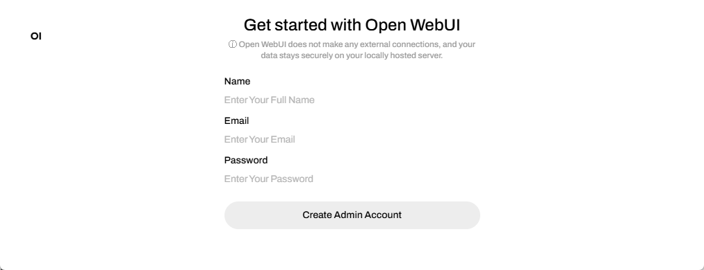
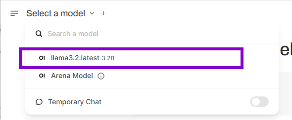
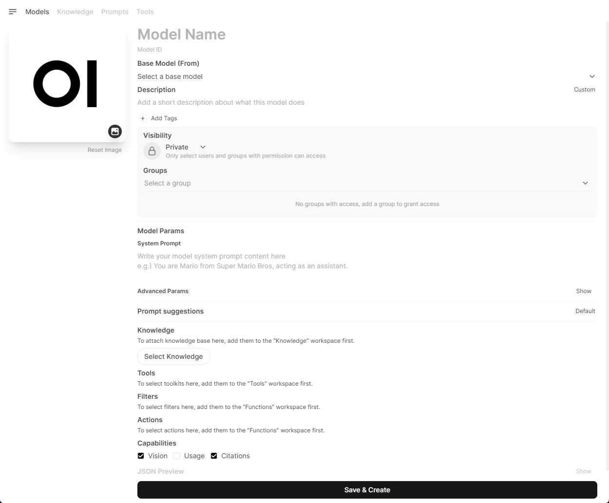
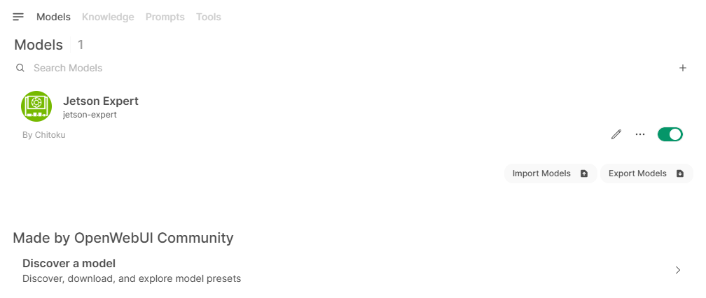
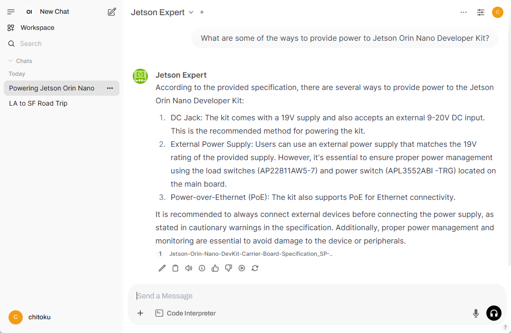

Tutorial - Open WebUI
Open WebUI is a versatile, browser-based interface for running and managing large language models (LLMs) locally, offering Jetson developers an intuitive platform to experiment with LLMs on their devices.
It can work with Ollama as a backend as well as other backend that is compatible with OpenAI, which can also run well on Jetson.
Ollama Server
What you need
-
One of the following Jetson devices:
Jetson AGX Orin (64GB) Jetson AGX Orin (32GB) Jetson Orin NX (16GB) Jetson Orin Nano (8GB)
-
Running one of the following versions of JetPack :
JetPack 5 (L4T r35.x) JetPack 6 (L4T r36.x)
-
NVMe SSD highly recommended for storage speed and space
-
7GBforopen-webuicontainer image
-
sudo docker run -d --network=host \
-v ${HOME}/open-webui:/app/backend/data \
-e OLLAMA_BASE_URL=http://127.0.0.1:11434 \
--name open-webui \
--restart always \
ghcr.io/open-webui/open-webui:main
ü¶ô Ollama backend
If you have installed Ollama , you can just run the Open WebUI docker container without installing any other things.
sudo docker run -d --network=host \
-v ${HOME}/open-webui:/app/backend/data \
-e OLLAMA_BASE_URL=http://127.0.0.1:11434 \
--name open-webui \
--restart always \
ghcr.io/open-webui/open-webui:main
Case 2: Ollama container
If you have not natively installed Ollama, you can also run
Ollama
in container using
jetson-containers
, after executing the above command to run Open WebUI container.
jetson-containers run --name ollama $(autotag ollama)
You need to have
jetson-containersinstalledgit clone https://github.com/dusty-nv/jetson-containers bash jetson-containers/install.sh
Case 3: Docker Compose to launch both at the same time
You can save the following YML file and issue
docker compose up
.
services:
open-webui:
image: ghcr.io/open-webui/open-webui:main
container_name: open-webui
network_mode: "host"
environment:
- OLLAMA_BASE_URL=http://127.0.0.1:11434
volumes:
- "${HOME}/open-webui:/app/backend/data"
ollama:
image: dustynv/ollama:r36.4.0
container_name: ollama
runtime: nvidia
network_mode: "host"
shm_size: "8g"
volumes:
- "/var/run/docker.sock:/var/run/docker.sock"
- "${HOME}/data:/data"
- "/etc/localtime:/etc/localtime:ro"
- "/etc/timezone:/etc/timezone:ro"
- "/run/jtop.sock:/run/jtop.sock"
Once you save the above YAML file in a directory, issue the following.
docker compose up
Basic Usage
Step 1. Access through Web browser
Open a Web browser on a PC connected to the same network as your Jetson, and access the following address.
http://<IP_ADDR>:8080
You will see a initial web page like this.
Click " Get started ".
Step 2. Complete the Account Creation Process
Follow the on-screen prompts to create an account.

Note
Note that all account information stays local , so privacy is maintained. You can use a random email address and password for this step as it is not verified or stored externally.
However, make sure to remember the credentials, as you’ll need them to log in for future sessions.
For more details, refer to the provided information link or instructions on the screen.
Once you " Create Admin Account ", you will be presented with the release notes for the latest version of Open WebUI. To proceed, click " Okay, Let's Go! " button.

Once everything is set up, you should see the following UI appear.
Step 3. Download an SLM model
To download an SLM model, click the dropdown next to the "Select a model" section. Type the name of the model you want to try in "üîé Search a model " field.
Once selected, you'll be prompted to download the model directly from Ollama.

After the download, select the newly downloaded model from the list. In our case, it was the LLaMA 3.2:2B model.

Tip
After downloading your SLM model, you have the option to disconnect your Jetson unit from the internet. This allows you to validate that all subsequent interactions are powered exclusively by the local generative AI model, all running on this edge AI computer.
Step 4. Start interacting with the model
You can now start interacting with the model, just like you would with any other LLM chatbot.

Usage - RAG
Step 1. Create a knowledge base
To enable RAG, you need to create a knowledge base that the LLM can reference to answer queries.
Follow these steps to create a knowledge base:
- Open the Open WebUI interface.
- Click on Workspace.
- Select Knowledge from the top menu.
- Click the "➕" icon to create a new knowledge base.
Step 2. Add files to the knowledge base
After providing the necessary details and clicking " Create Knowledge ", you will be redirected to the following page.
Here, you can add files or entire directories to build your knowledge base.
Select a local PDF file or other document files to upload.


Step 3. Create a custom model with knowledge base access
To leverage the knowledge base for more accurate and context-aware responses, you need to create a model that can access this information. By linking the model to the knowledge base, the LLM can reference the stored data to provide more precise and relevant answers to user queries.
Follow these steps to create a model with knowledge base access
- Open the Open WebUI interface.
- Click on Workspace.
- Select Model from the top menu.
- Click the "➕" icon to create a new model.

Step 4. Configure the model
After clicking the "➕" icon, the following screen will appear.

Here, you can configure the model with the following info:
| Field | What to do | Example |
|---|---|---|
| Model name | Enter a name for your new model. | " Jetson Expert " |
| Select a base model | Choose a base model from the list of models you've downloaded on your local Ollama server. |
"
llama3.2:3b
"
|
| Select Knowledge | Click the button and select the newly created knowledge base from the list. | " Jetson Documents " |
Once you enter necessary information, click " Save & Create " button.
You will be taken back to the Models tab in the Workspace.

Step 5. Chat with your custom model
You can now navigate to the chat window and select the newly created model.
Use this model to ask questions related to the uploaded documents. This will help verify if the model can successfully retrieve information from the knowledge base.

Troubleshooting
Open Web UI is not responding
Reload the page on your web browser.
How to Create a New Account for Open WebUI (If You Forgot Your Password)
If you need to create a new account in Open WebUI (for example, if you forgot your password), follow these steps to reset the account:
Delete the existing Open WebUI data folder:
This will remove all existing user account data and settings. Run the following command:
sudo rm -rf ${HOME}/open-webui
Re-run the Docker container
This will recreate a fresh instance of Open WebUI, allowing you to create a new account.
sudo docker run -d --network=host \
-v ${HOME}/open-webui:/app/backend/data \
-e OLLAMA_BASE_URL=http://127.0.0.1:11434 \
--name open-webui \
--restart always \
ghcr.io/open-webui/open-webui:main
How to Shut Down Open WebUI?
To gracefully stop and remove the Open WebUI container, run the following commands:
sudo docker stop open-webui
sudo docker rm open-webui
Optional Setup: ü§ñ MLC backend
Instead of running Open WebUI with Ollama backend, we can run models with more performant backend with MLC that are designed to run optimally on Jetson and can communicate to Open WebUI through OpenAI compatible API.

Case 1: Separate
docker run
commands
After running Open WebUI container with the following command, you can run the
docker run
command you find in the new
Models
page.
sudo docker run -d --network=host \
-v ${HOME}/open-webui:/app/backend/data \
-e OLLAMA_BASE_URL=http://127.0.0.1:11434 \
--name open-webui \
ghcr.io/open-webui/open-webui:main
docker run -it --rm --gpus all \
-p 9000:9000 \
--pull always \
-e DOCKER_PULL=on \
-e HF_HUB_CACHE=/root/.cache/huggingface \
-v /mnt/nvme/cache:/root/.cache \
dustynv/mlc:r36.4.0 \
sudonim serve \
--model dusty-nv/Llama-3.1-8B-Instruct-q4f16_ft-MLC \
--quantization q4f16_ft \
--max-batch-size 1 \
--host 0.0.0.0 \
--port 9000
docker run -it --rm --gpus all \
-p 9000:9000 \
--pull always \
-e DOCKER_PULL=on \
-e HF_HUB_CACHE=/root/.cache/huggingface \
-v /mnt/nvme/cache:/root/.cache \
dustynv/mlc:r36.4.0 \
sudonim serve \
--model dusty-nv/DeepSeek-R1-Distill-Llama-8B-q4f16_ft-MLC \
--quantization q4f16_ft \
--max-batch-size 1 \
--chat-template deepseek_r1_llama \
--host 0.0.0.0 \
--port 9000
Case 2: Docker compose
You can save the following YML file (select one, and save as
compose.yml
) and issue
docker compose up
.
# Save as compose.yml and run 'docker compose up'
services:
llm_server:
stdin_open: true
tty: true
deploy:
resources:
reservations:
devices:
- driver: nvidia
count: all
capabilities:
- gpu
ports:
- 9000:9000
pull_policy: always
environment:
- DOCKER_PULL=on
- HF_HUB_CACHE=/root/.cache/huggingface
volumes:
- /mnt/nvme/cache:/root/.cache
image: dustynv/mlc:r36.4.0
command: sudonim serve --model dusty-nv/Llama-3.1-8B-Instruct-q4f16_ft-MLC
--quantization q4f16_ft --max-batch-size 1 --host 0.0.0.0 --port 9000
healthcheck:
test: ["CMD", "curl", "-f", "http://0.0.0.0:9000/v1/models"]
interval: 20s
timeout: 60s
retries: 45
start_period: 15s
open-webui:
image: ghcr.io/open-webui/open-webui:main
container_name: open-webui
restart: always
network_mode: host
environment:
- ENABLE_OPENAI_API=True
- OPENAI_API_BASE_URL=http://localhost:9000/v1
- OPENAI_API_KEY=foo
volumes:
- "${HOME}/open-webui:/app/backend/data"
# Save as compose.yml and run 'docker compose up'
services:
llm_server:
stdin_open: true
tty: true
deploy:
resources:
reservations:
devices:
- driver: nvidia
count: all
capabilities:
- gpu
ports:
- 9000:9000
pull_policy: always
environment:
- DOCKER_PULL=on
- HF_HUB_CACHE=/root/.cache/huggingface
volumes:
- /mnt/nvme/cache:/root/.cache
image: dustynv/mlc:r36.4.0
command: sudonim serve --model dusty-nv/DeepSeek-R1-Distill-Llama-8B-q4f16_ft-MLC
--quantization q4f16_ft --max-batch-size 1 --chat-template deepseek_r1_llama --host 0.0.0.0 --port 9000
healthcheck:
test: ["CMD", "curl", "-f", "http://0.0.0.0:9000/v1/models"]
interval: 20s
timeout: 60s
retries: 45
start_period: 15s
open-webui:
image: ghcr.io/open-webui/open-webui:main
container_name: open-webui
restart: always
network_mode: host
environment:
- ENABLE_OPENAI_API=True
- OPENAI_API_BASE_URL=http://localhost:9000/v1
- OPENAI_API_KEY=foo
volumes:
- "${HOME}/open-webui:/app/backend/data"
Once you save the above YAML file in a directory, issue the following.
docker compose up

Note that it generates faster than Ollama (llama.cpp).